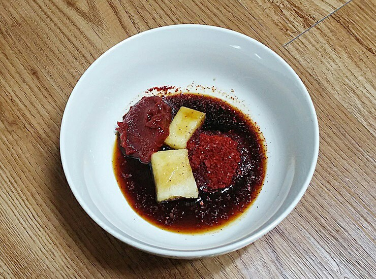
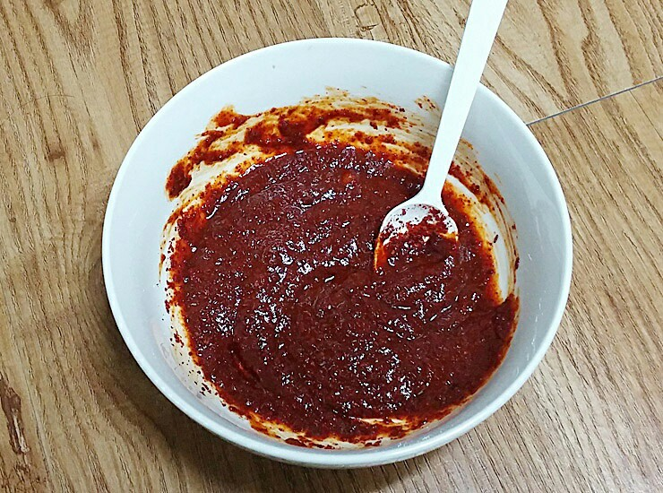
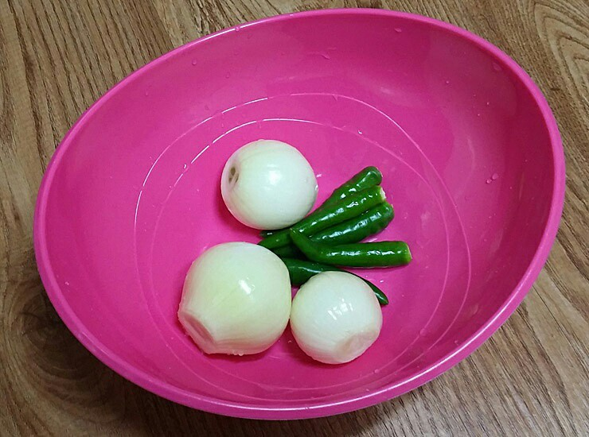
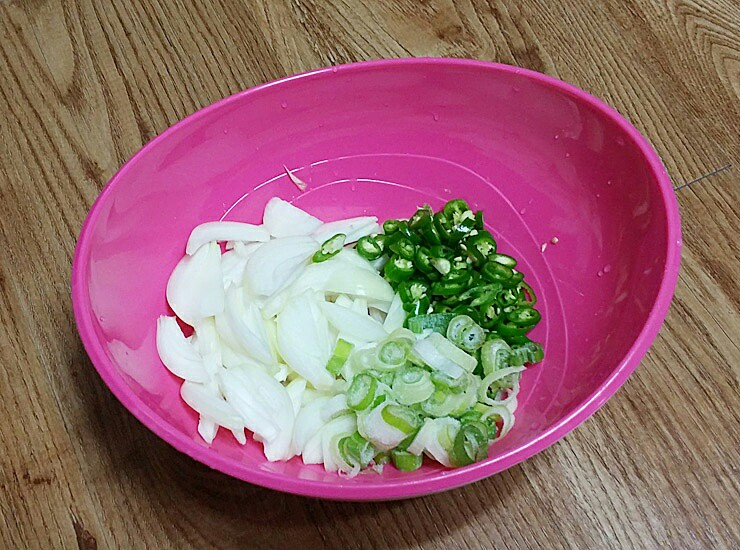
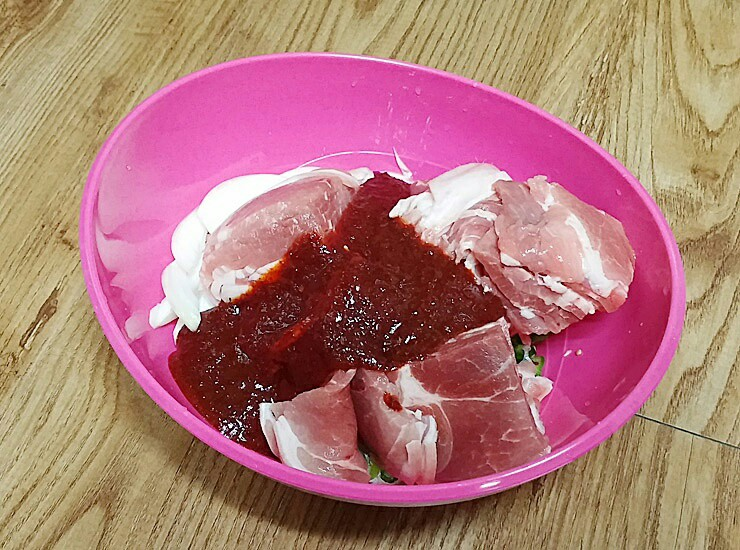
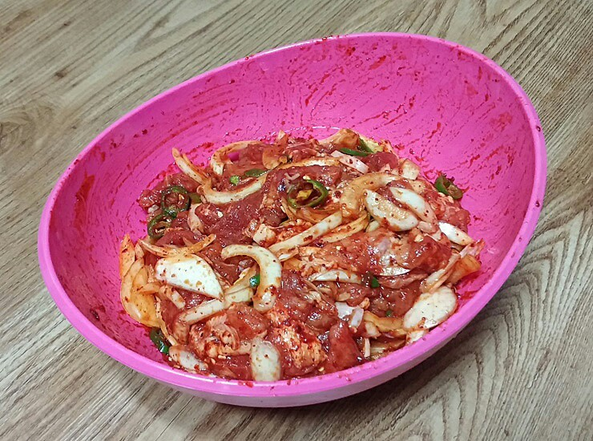
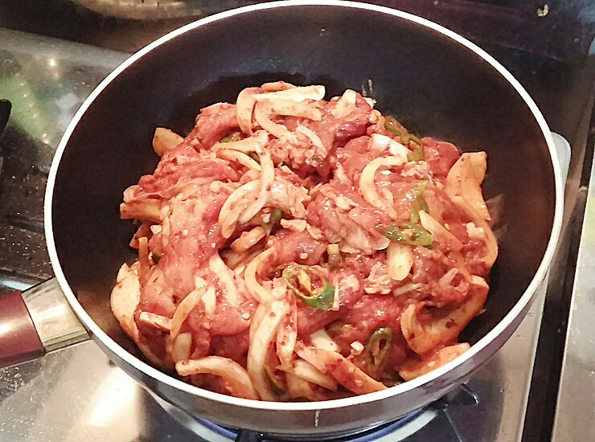
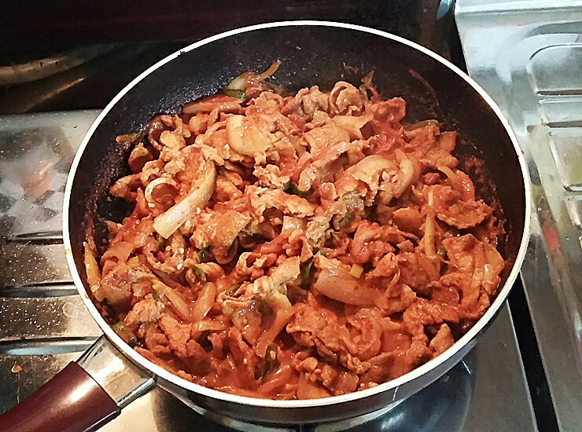

Ingredients
주 재료
- 돼지고기600g
- 양파3개
- 청량고추5개
- 대파1뿌리
양념
- 고추장1큰술
- 고추가루3큰술
- 다진마늘2큰술
- 간장1큰술
- 매실액기스2큰술
- 돼지갈비양념2큰술
Steps
- 고추장 한큰술,고추가루 3큰술,다진마늘 2큰술, 간장 1큰술,매실액기스 2큰술,돼지갈비양념 2큰술을 모두넣고

- 골고루 섞어서 제육볶음 양념장을 만들어 줍니다.

- 청량고추와 양파,대파는

- 잘게 썰어줍니다.

- 손질한 야채에 돼지고기와 만들어둔 양념장을 넣고 골고루 버무려 줍니다.

- 야채와 고기에 양념이 골고루 베이면 냉장고에서 30분에서 1시간 정도 숙성시켜 줍니다.

- 30분 후 숙성된 고기는 중간불에서 볶아 줍니다.

- 10분정도 볶아주면 완성됩니다.
